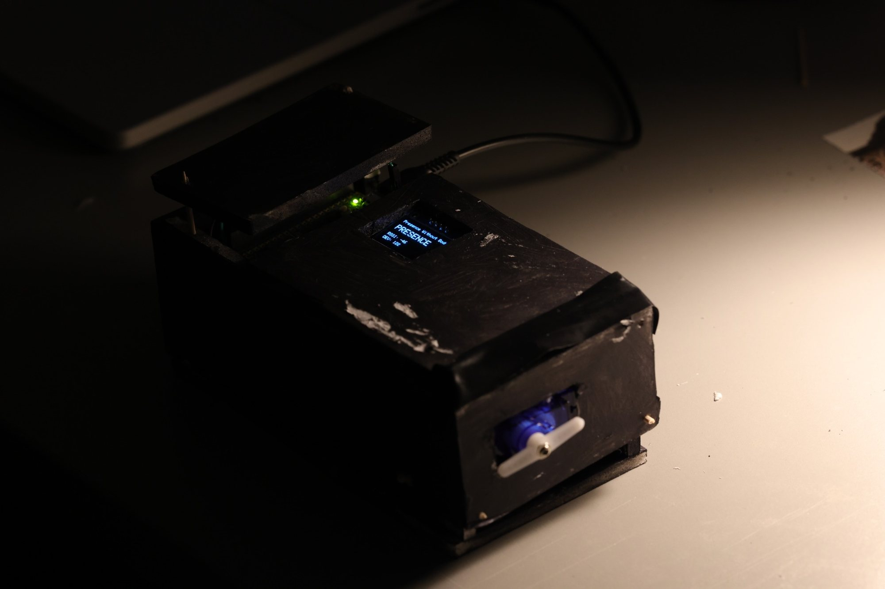
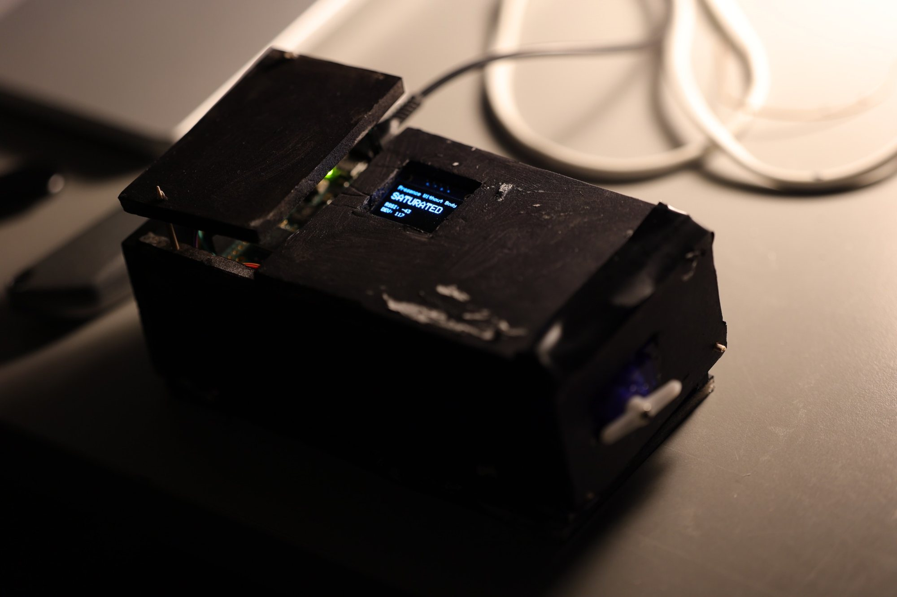
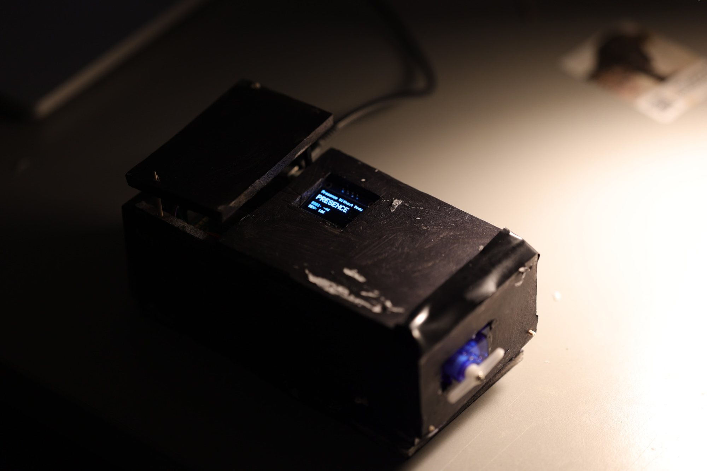

Presence
without Body

A web interpretation of the work's threshold logic — responding to movement and scrolling, not Bluetooth data.
This project explores how a system constructs human presence without ever perceiving the body itself, responding only to the unstable wireless traces that surround it.
Presence without Body began with a question: if an artwork is itself a system, how does that system perceive a human?
Instead of using cameras or biometric recognition, the work scans nearby Bluetooth Low Energy signals from personal devices. A person is not understood through visual appearance, but through weak and unstable traces emitted by phones, wireless earphones, smartwatches and other devices.
The system does not identify a complete person. It constructs presence indirectly, through fragments.
BLE activity is unstable and cannot be read as a precise count of people. The prototype therefore uses simplified threshold-based states, allowing uncertainty to remain visible rather than eliminating it.


Raspberry Pi Pico W · Bluetooth Low Energy scanning · OLED display · servo motor · threshold-based logic